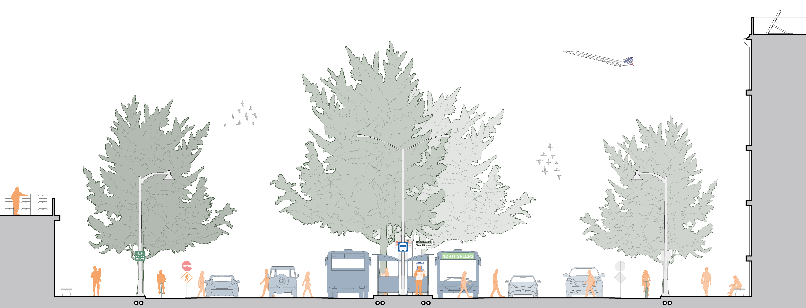
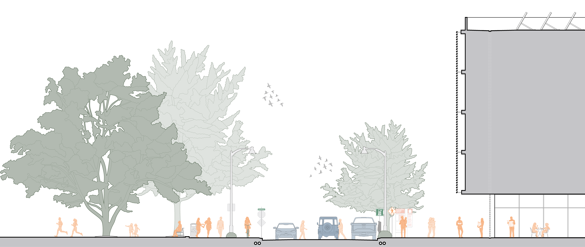
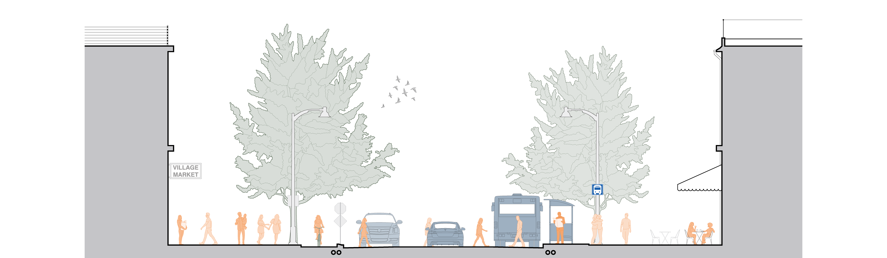
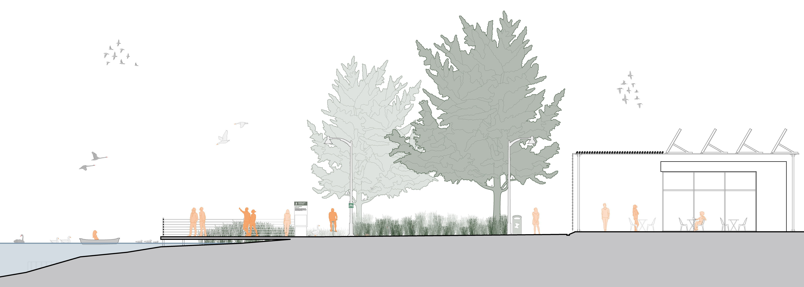
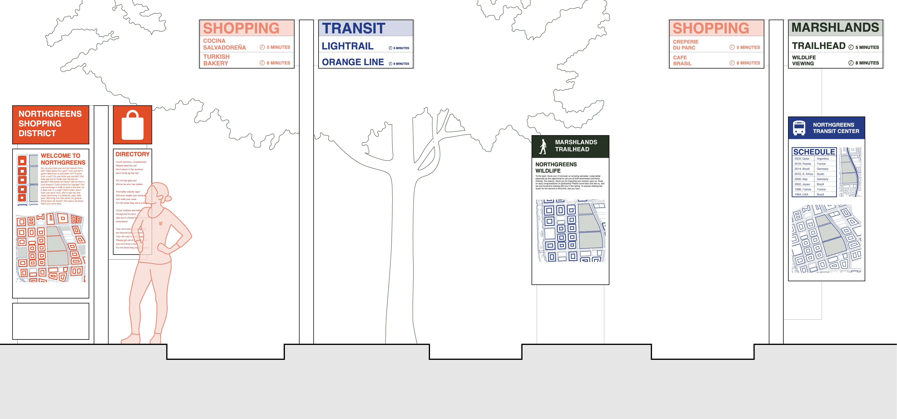

Details
Dead Mall Fall is an urban design and planning project based in Houston, Texas. "Dead malls" is a term coined to describe once popular commercial centers which now sit abandoned as a result of many factors, including shifts in shopping habits which have made many brick-and-mortar stores obsolete. As a studio, we identified numerous dead mall sites in Houston, and conducted research about the history, culture, and demographics of the areas surrounding them. This project is located at Greenspoint Mall, a once popular shopping center on I-45 North and Beltway 8. Currently, the mall (and its adjacent area) sits abandoned and unused. Here, I examine various design strategies for improving and revitalizing the Greenspoint neighborhood. These designs emphasize ecological sustainability, multi-modal transportation, walkability, community safety and economic prosperity.
Documents
Reimagining the Right of Way

Boulevards - Primary Roads
Boulevards are the largest artery for traffic in a community. Here the primary roads into Greenspoint are redesigned with an increased focus on public transit, cycling, and pedestrian traffic. Wide sidewalks create safe, walkable areas within the community, and protected bike lanes encourage people to opt-out of personal cars as their sole means of transportation.

Commercial Avenues and Greenspaces
Redesigned "Main Street" style shopping and commercial streets are important in creating a vibrant, lively community. Not only will commercial spaces bring jobs and economic movement to Greenspoint, they encourage community members and visitors to spend time in the neighborhood. Furthermore, greenspaces near to where people live and work attract people to the outdoors and encourages pedestrian travel.

Residential Streets
Narrower residential streets with expanded sidewalks and amenity zones offer residents and visitors of Greenspoint safe, walkable streets between their homes, local stores, or their favorite cafes. Reduced vehicular traffic allows cyclists to share the road with drivers, and public transit options increase mobility for everyone in the Greenspoint area.

Trails and Footpaths
Parks and greenspaces are vital to a healthy community. By creating dedicated spaces for outdoor recreation and exercise, residents and visitors are encouraged to spend more time outdoors. A more subtle benefit of these spaces includes flood mitigation/prevention and rain water retention.
Greenspoint for People

Wayfinding Signage
Pedestrian, cyclist, and transit wayfinding signage create a stronger sense of identity within the community. Clearly marked paths, transit routes, and maps make people feel more comfortable living, working, and visiting Greenspoint. For example, if a parent is confident their child can find their way to a from school or a cafe, they are more receptive to the idea of letting them walk or bike instead of driving to their destination.